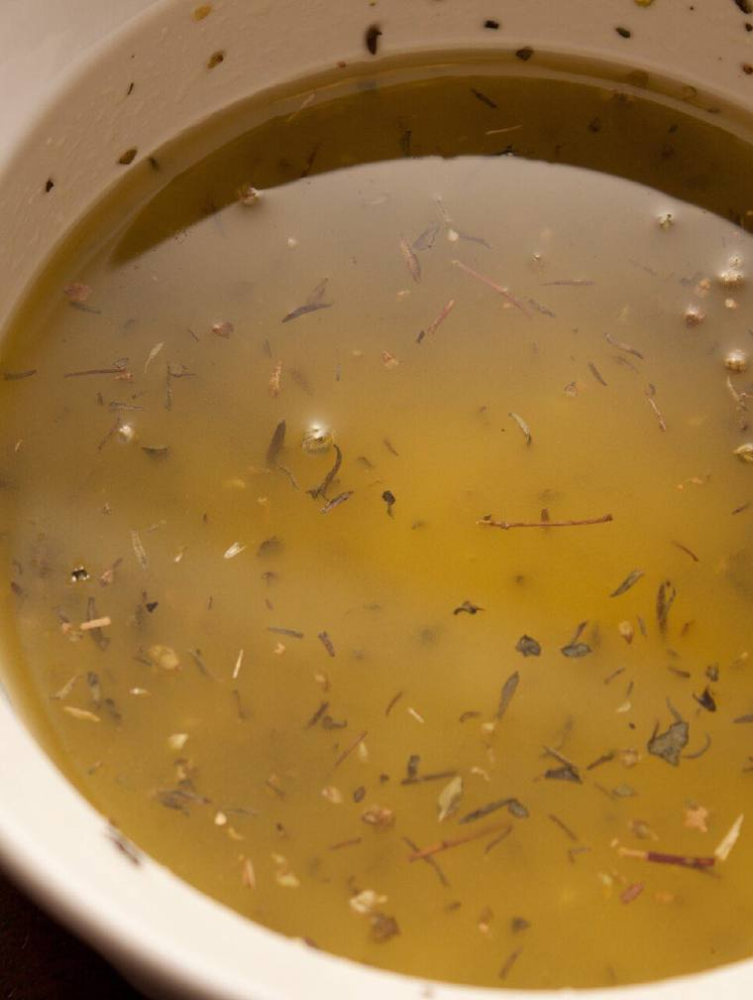

Sauces

Sauces
Vinaigrette
Préparation : 5 min
Ingrédients (pour 4 personnes)
- 10 cl d’huile
- 3 cl de vinaigre
- 1 cuillère à café de moutarde (facultatif)
- sel, poivre
Quantités adaptées. Les temps de cuisson ne sont pas recalculés.
- Dissoudre le sel dans le vinaigre, ajouter poivre et moutarde.
- Verser l’huile en fouettant vivement.
- Fouetter de nouveau au moment de servir.
À conserver au froid, jamais au placard
Au réfrigérateur entre 0 et 4 °C : 3 jours au plus. Ne pas congeler. Avec ail, échalote ou herbes, la préparer le jour même.
AstuceHuile de noix et vinaigre balsamique pour la salade de gésiers, olive et Xérès pour les papas aliñás.
D’après une fiche de travaux pratiques sur les sauces émulsionnées. Ramené d’un litre à 10 cl d’huile.